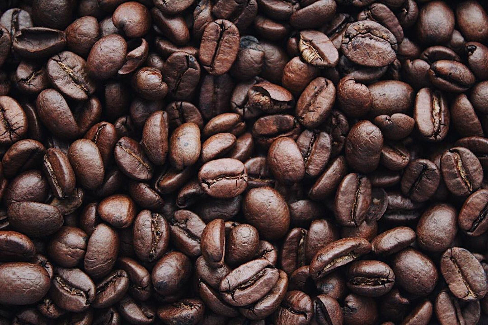
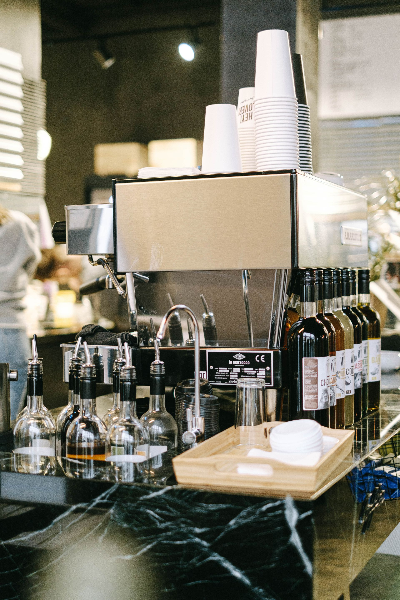
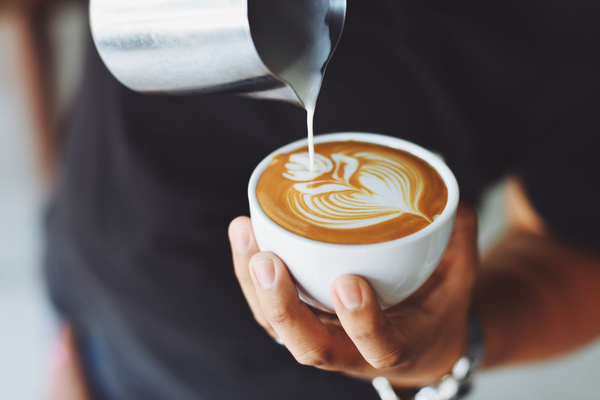

Beans, by post.
Roasted on Tuesday or Friday, in your letterbox within two days.
Forge is a fictional roastery created as a design demonstration by İzden Creative · info@izdencreative.com
Small-batch roastery · İstanbul
Coffee roasted to a curve, not a colour.

Signature · One roast, minute by minute
Green beans drop into a drum already at 200 °C. The temperature falls fast — that is the beans taking the heat.
Today's board
Washed. Jasmine, bergamot, peach skin.
Honey process. Red apple, panela, cacao nib.
Natural. Hazelnut, dark chocolate, long finish.


Roasted on Tuesday or Friday, in your letterbox within two days.
Forge is a fictional roastery created as a design demonstration by İzden Creative · info@izdencreative.com